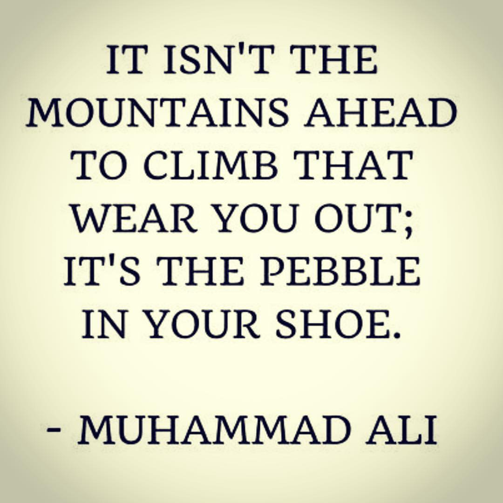

About Me
My name is Antonio J. Gage, and I'm a software developer at HP. In my spare time I enjoy being engulfed in fitness, both training myself and others. I actively practice many martial arts and enjoy hiking, sky diving, surfing, and generally anything technologically related. I'm originally from Houston, Texas; however, I've been living in Austin for 3 years.
Inspirational Quote of the Day

Resume and Experience
Summary
Passionate, goal oriented, innovative relational, and technical leader with the proven ability to simultaneously support multiple mid-to large scale projects. An international compliance developer with exceptional communication skills that encourages teams to engage in continuous improvement. Experienced in providing cross industry enterprise solutions in the Information Technology, Legal and Educational fields. Accustomed to working and collaborating with multiple teams to provide technical solutions that focus on global compliance.
Connect with Me